Take-Home_Ex01
The Task
Creating an age-sex pyramid that illustrates Singapore’s demographic structure by age cohort and gender using Tableau. Our data source is the Singapore Residents by Planning Area / Subzone, Age Group, Sex and Type of Dwelling, June 2022. You can find the data set at Singstat.
1. Introduction
The population pyramid, or age-sex pyramid, depicts how a population (typically a country or region) is distributed by age groups and sexes. Males are generally depicted on the left, while females are on the right of the illustration, and it is measured either as absolute numbers or as percentage of the total population.
Population pyramid is often regarded as an effective way to graphically represent population age and distribution, because they provide a very clear picture of the population distribution. A population pyramid can be used to get a lot of information about the population broken down by age and sex, which can aid reader to better understand the extent of development and other aspects of the population.
2. Data
With data collected from the Department of Statistics web page, the goal of this exercise is to visualize the age, cohort, and gender demographic structure of Singapore in June 2022.
3. Visualization Design
To see the population pyramid in Tableau Public, click here.
4. Key Observations
5. Step-by-Step Description
This section details the steps required to produce the Population Pyramid in Section 3.
5.1 Cleaning the data
| No. | Step | Screenshot |
|---|---|---|
| 1 | Load the ‘Singapore Residents by Planning Area Subzone Age Group Sex and Type of Dwelling June 2022.csv’ file into Tableau Desktop |  |
| 2 | Click on ‘Cleaned with Data Interpreter’ to clean the dataset | |
| 3 | Select both ‘2022(Female)’ & ‘2022(Male)’ |  |
| 4 | Drag selection into empty space to append both tables | |
| 5 | Click ‘Add’ Filters to add the following filters on dataset. Click on ‘Add’ & select a field to filter. Click on ‘All’ and unselect for those to exclude. Click ‘OK’ once done. |
|
| 6 | Right-click on ‘Sheet’ column and select Split. This is to split this column into two columns - one column containing before the delimiter () and one column containing inside the delimiter () |
|
| 7 | Right click on ‘Sheet - Split 1’ to rename this to ‘Gender’ |
|
| 8 | Hide Sheet, Table Name, 2022 |  |


5.2 Create Calculated Fields & Parameters
Go to Sheet 1 for the following steps.
| No. | Step | Screenshot |
|---|---|---|
| 1 | Right click on the empty spaces and click on ‘Create Parameter’. Create the following Parameter called ‘Total Columns’ and include current value = 3, data type = Integer |
|
| 2 | Right click on the empty spaces and click on ‘Create Calculated Field’. Create the following calculated field according to the formula as screenshot:
|
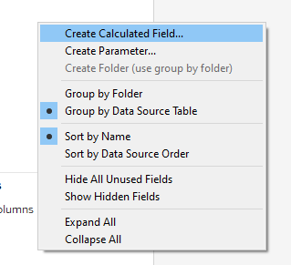 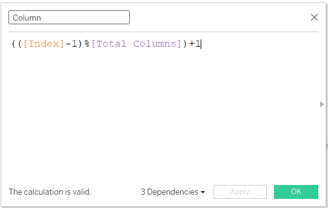 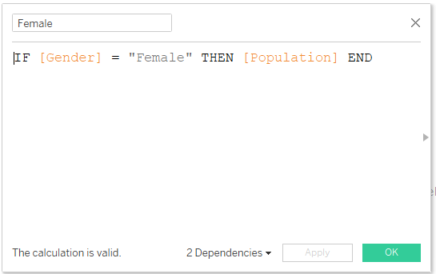 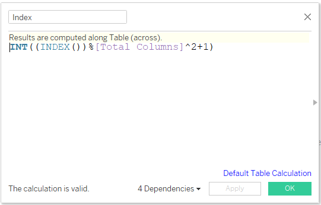 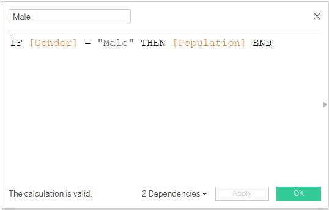 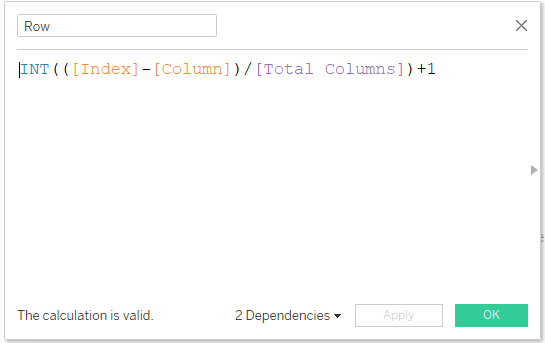 |
5.3 Create Visualization
| No. | Step | Screenshot |
|---|---|---|
| 1 | Click and Drop both Column & Row into Columns and Rows Respectively | 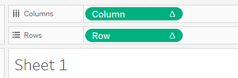 |
| 2 | Right click on Column and select ‘Discrete’. Repeat the same for Row. | 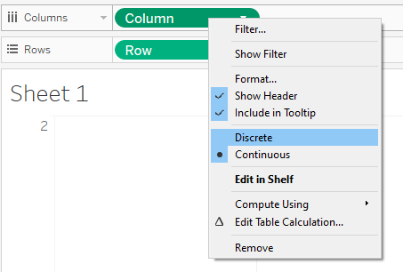 |
| 3 | Drag Male, Female & Age Group into columns and rows as per screenshot. Note that Male should be on the left and Female should be on the right. | 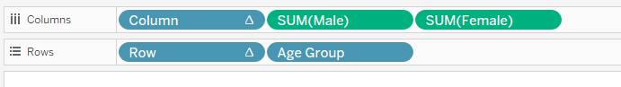 |
| 4 | Drag both ‘Index’ and ‘Planning Area’ into ‘Detail’ under Marks | 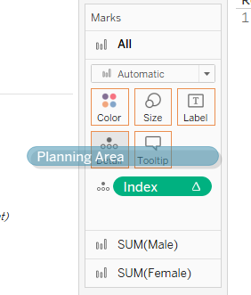 |
| 5 | Right-click on Column and select Compute Using > Planning Area. Repeat the same steps for Row. | 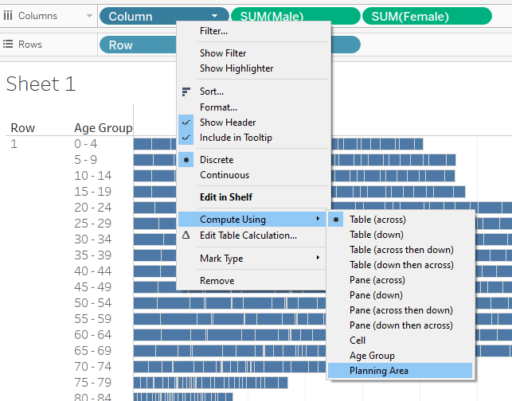 |
| 6 | Right click on ‘Male’ Axis and select Edit Axis. Check Reversed. | 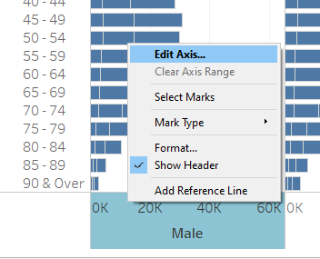 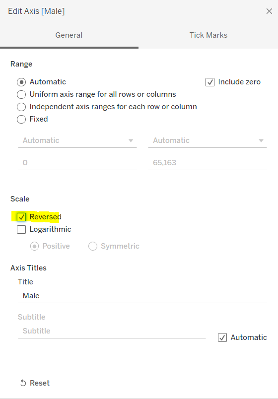 |
| 7 | Drag Planning Area to Filters. Click on ‘Top’ then select ‘By field:’. Change to Top 9 by population and click on Ok | 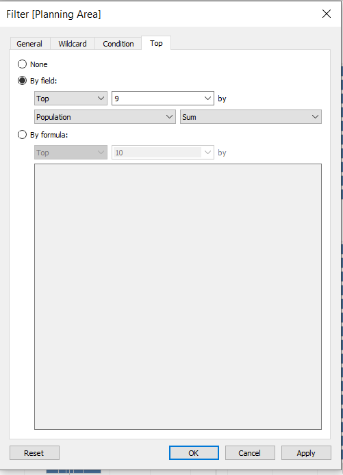 |
| 8 | Right click on Column and uncheck ‘Show Header’. Repeat the same for Row | 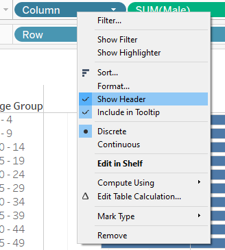 |
| 9 | Right click on ‘Age Group’ and select sort. Select Sort by ‘Data source order’ & Descending. | 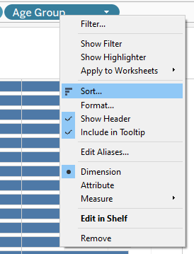 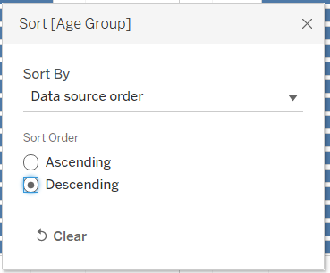 |
| 10 | Select SUM(Female) under Marks, and click on ‘Color’. Select the color for Female population |  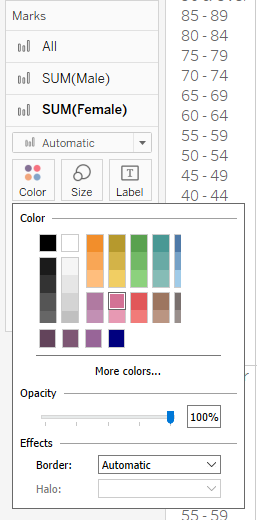 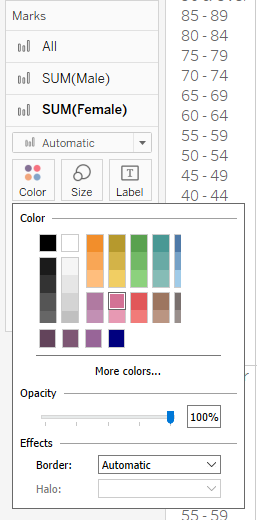 |
| 11 | Right click on SUM(Male) and uncheck Show Header. | 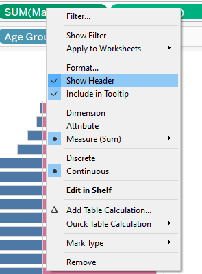 |
| 12 | Click on SUM(Male) in Marks, then drag Male into Label. Do the same for Female. Do the following formatting:
|
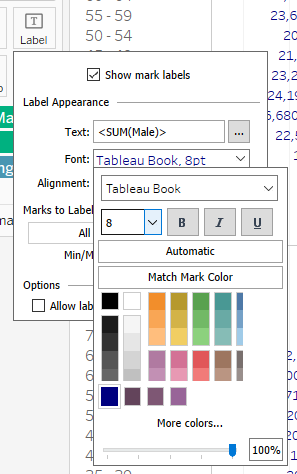 |
| 13 | Right click on Age Group and select Format. Select Shading colour: #e6e6e6 and Alignment: Center |
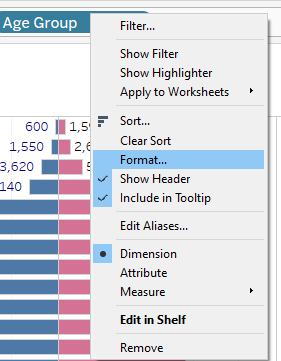
|
| 14 | Select a bar from one trellis. Right click on the bar and select Annotate > Mark | 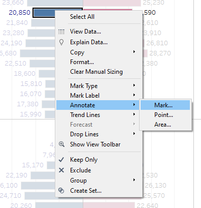 |
| 15 | Type the following in the Annotation and click on OK. | 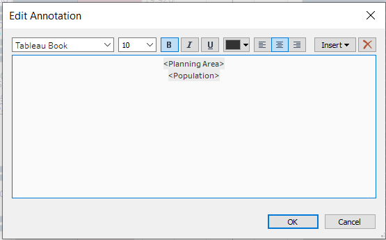 |
| 16 | Select the annotation and select Shading: None, Line: None. Repeat step 15 - 16 for all trellis. Drag each annotation box to top left corner of the trellis. | 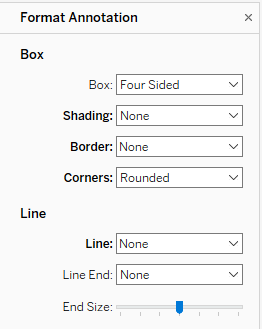 |
| 17 | Rename Sheet 1 to ‘Singapore Population Pyramid’ | 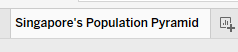 |
| 18 | Right click on Title and click on Edit Title. Sub-Header (Tableau Light, 12) Female & Male to color code same as font color |
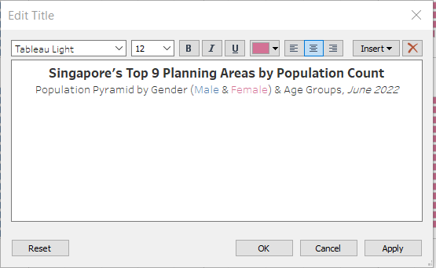 |


6. References
Wikimedia Foundation. (n.d.). Population pyramid. Wikipedia. Retrieved January 20, 2023, from https://en.wikipedia.org/wiki/Population_pyramid